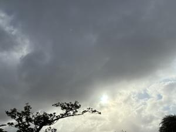
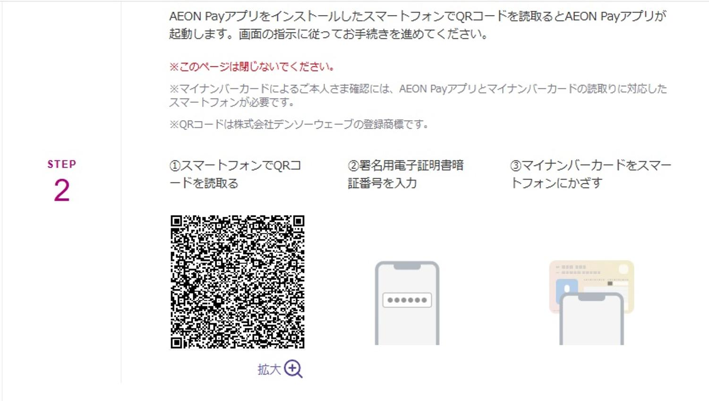
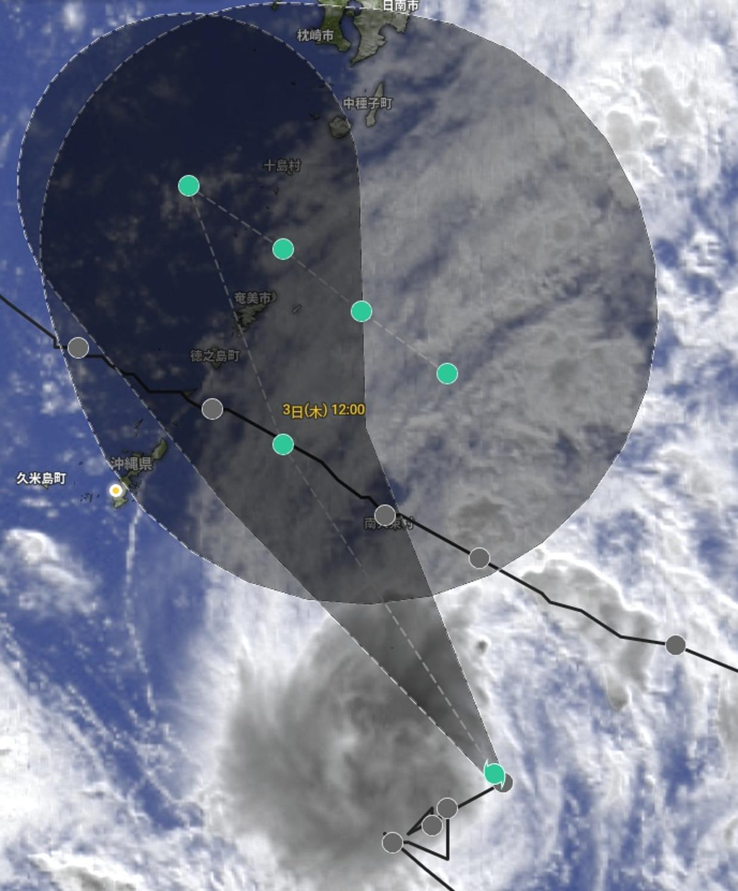

うるがいの話 ある日
最新: やり過ぎ認証手続き【うるがいの話 ある日】とは 一日だけのプログです
『うるがいの話』の最新一日だけのプログで、通信料が少なく経済的だ。カニの画像をクリックすると全ての日付が載る『うるがいの話』サイトを表示します
|
|
【うるがいの話】 うるがい(ｳﾙｶﾞｲ urugai)とは、『もずくがに』の名前でとても大きくなります。 |
|---|---|
|
|
【カミマヤーの話】 猫のことを方言でマヤーといいます。カミマヤー（kamimayaa）とは、神の猫のことです。 |
|
【たながぁの音楽】 たながぁ（ﾀﾅｶﾞｰ tanagaa）とは手長えびのことで、何種類かあり大きいのは車 エビぐらいになります。 |

|
【ぶながぁの話】 ぶながぁ(ﾌﾞﾅｶﾞｰ bunagaa)とは、赤い髪の毛、赤い身体、そして身長は１ｍ２０ｃｍ ぐらい、川の蟹を食べているの目撃された。場所は沖縄県国頭郡大宜味村のと ある村僕の隣近所に住んでいる爺さんから、聞いた話です。 |
|
|
【ギーマの話】 ギーマ(giima)とは、山原の里山に咲くスズランに似た、 花を付けます。実は食べられます、 気が付くと口の周りが紫になっています。 |
2026年09月02日 (水）やり過ぎ認証手続き
16:00

昨夜はぐっすり、今朝は爽やかに起きました。普通とは、これだ
ったんだと感じたました。ところで、イオンから『【重要】ご登
録情報の確認・更新のお願い』のメールが来ました。内容が現役
の状態です、おとといは同じようにセゾンカードも古かったので
訂正しました。
さてと、直すかと手続きをすると認証が、複雑で・・・・。なん
とマイナンバーカードを使った認証を、それも最も厳格な「署名
用電子証明書の暗証番号」（英数字６〜１６桁）を入力させて。
でもカードから認証出来なかった。２度したけど

仕方ない、電話（無料の）で例のエアイなんかでしょう、自動音
声聞いているうちにカチンときて止めた。でサイトをみると６５
歳以上はと電話番号があるのね、でも有料で。ケッやめるぜ。
これって詐欺ではないだろうか、と心配になりいろいろ調べたが
大丈夫みたいだ。それにしても、困ったもんだ。やりすぎでしょ
う。利用者の利便性を全く、考えていない。ま、こっちは特に困
らないので放置すべ。

突然のにわか雨、風が強いので洗濯物を取り込まないといけない
のですよ。晴れているのに・・・、台風２４号のコースとんでも
ないっす。